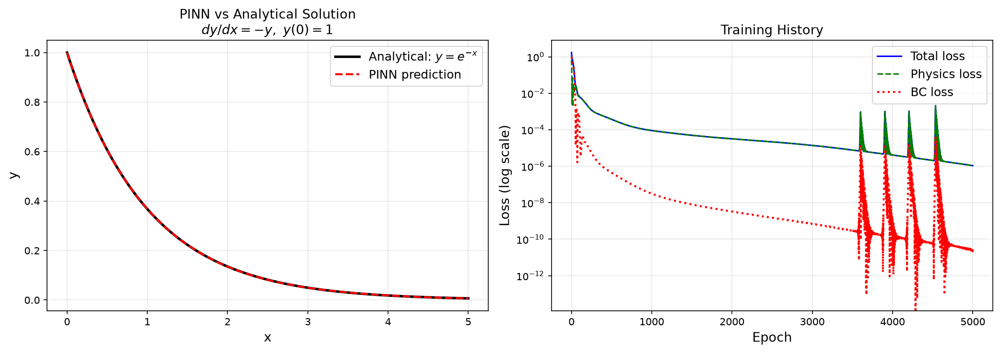
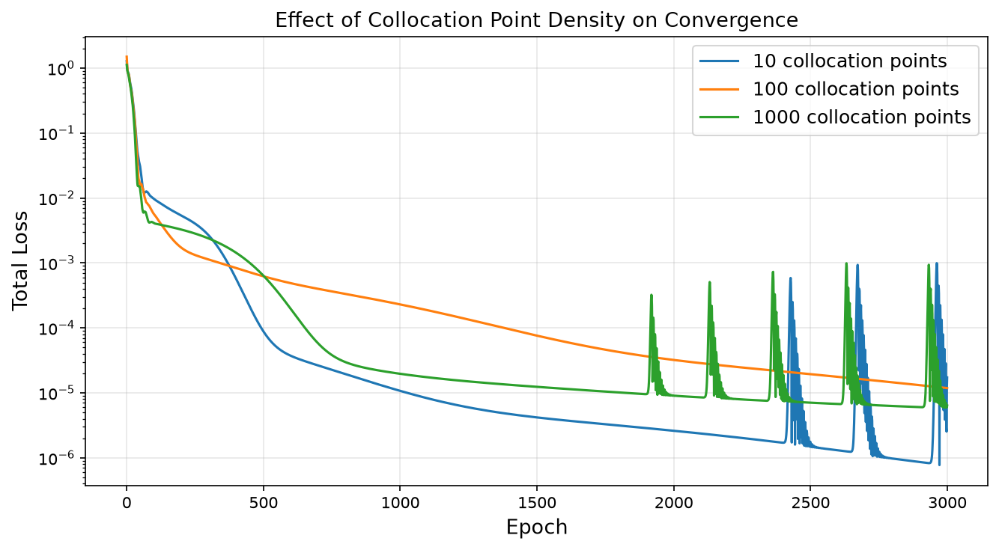
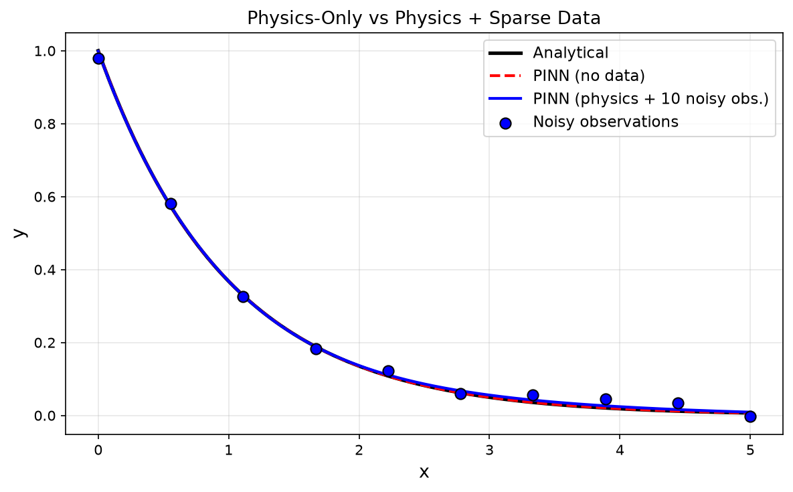

From the failure of pure data-driven ML in engineering to your first working PINN, a zero-labeled-data solver for a first-order ODE that trains entirely on the governing equation itself.
Scientific MLPhysics-Informed AISep 202518 min readBeginnerPyTorch
Large language models are trained on hundreds of billions of tokens of human text. The internet is saturated with language data. The statistical patterns in language are redundant, overlapping, and forgiving, if the model misses a nuance, the surrounding context usually compensates.
Now ask: how much labeled data does a pharmaceutical manufacturing process generate? A typical batch reactor might log temperature, pressure, and concentration at 10-second intervals. Run for a full year, that yields roughly 3 million data points, spread across dozens of operating variables, with process upsets, sensor drift, and changing feedstock composition corrupting a significant fraction of them. That is not internet-scale data. That is sparse, expensive, physics-constrained data.
The structural asymmetry between language and engineering data
Engineering systems are governed by differential equations
Almost every physical process in chemical, mechanical, or pharmaceutical engineering is described by an ODE or PDE. These equations encode centuries of accumulated physical understanding, not approximate statistical patterns, but precise mechanistic relationships.
A standard neural network trained only on data will violate these relationships. It will predict reactors with more energy out than in, fail completely outside the training range of temperatures and concentrations, and produce physically implausible results. This is not a theoretical concern, it has been observed repeatedly in industrial ML deployments.
The core insight
Traditional AI: Data → Loss → Model. Physics-Informed AI: Data + Physical Laws → Loss → Model. The physical law is not an afterthought, it is baked directly into the training objective.

Fig. A — First working PINN: the network solution (red) vs. analytical reference (black) for the first-order ODE $y'=-y$. Trained with zero labeled data — only the residual loss and initial condition.

Fig. B — Effect of collocation point density on solution accuracy. Too few points leave residual blind spots; too many adds unnecessary compute. The middle column shows the balanced regime used throughout the series.

Fig. C — PINN with sparse data observations. Even with only 5 noisy measurement points (crosses), the physics residual constrains the trajectory to physically consistent behavior across the full domain.
02, What Is a PINN
The Three-Term Loss Function
A standard neural network learns a mapping $f_\theta: x \rightarrow y$ by minimizing the prediction error on labeled outputs:
A Physics-Informed Neural Network learns the same mapping, but adds the requirement that whatever the network predicts must also satisfy the governing differential equation. The training objective becomes:
In many engineering applications, and in the first example below, there are no labeled observations at all. The data term vanishes entirely, and the differential equation is the training signal.
Analytical solution: $y(x) = e^{-x}$. In the PINN approach, the network $\hat{y}(x)$ is evaluated at a set of collocation points $\{x_i\}$ scattered across the domain. At each point, the ODE residual is computed:
No labeled $(x, y)$ pairs are needed anywhere in this training procedure. The differential equation is the training signal.
Figure 1. Traditional NN vs PINN architecture. The PINN adds an automatic differentiation path that feeds the network's own output derivatives back into the loss, enabling physics enforcement without labeled data.
03, Automatic Differentiation
Why Autograd Wins Over Finite Differences
Enforcing $\frac{d\hat{y}}{dx} + \hat{y} = 0$ requires computing the derivative of the network's output with respect to its input. Three methods exist for this, with dramatically different tradeoffs:
Method
Mechanism
Accuracy
Limitations
Finite Differences
$\frac{f(x+h), f(x)}{h}$
Approximate; $O(h)$ or $O(h^2)$
Mesh dependency; truncation error accumulates with higher orders; unstable for small $h$
Symbolic Differentiation
Algebraic manipulation rules
Exact
Expression swell makes it intractable for deep networks; completely inflexible
Automatic Differentiation
Chain rule through computation graph
Exact (machine precision)
Requires AD framework (PyTorch, JAX, TensorFlow)
When you compute $\hat{y} = f_\theta(x)$ in PyTorch with requires_grad=True on the input $x$, PyTorch constructs a computational graph recording every operation. Calling torch.autograd.grad() traverses this graph in reverse, applying the chain rule exactly, to machine floating-point precision. No mesh, no approximation, no truncation error.
The key parameter is create_graph=True on the first derivative call. Without it, PyTorch frees the intermediate graph and second derivatives become unavailable. With it, the derivative itself is a differentiable expression, enabling nested calls for $\frac{d^2\hat{y}}{dx^2}$, Laplacians, and beyond.
Python · PyTorch
# Demonstrate exact automatic differentiation# f(x) = x³ + 2x² − 5x + 1 → f'(x) = 3x² + 4x − 5 → f''(x) = 6x + 4
x = torch.tensor([2.0], requires_grad=True)
f = x**3 + 2*x**2 - 5*x + 1# First derivative — create_graph=True keeps the graph alive for second pass
dfdx = torch.autograd.grad(f, x, create_graph=True)[0]
# Second derivative
d2fdx2 = torch.autograd.grad(dfdx, x)[0]
# Results at x=2: f=7, f'=15, f''=16 (all exact)print(f.item(), dfdx.item(), d2fdx2.item())
# Output: 7.0 15.0 16.0
When the simple polynomial above is replaced by the full neural network $f_\theta(x)$, autograd can still propagate the chain rule through all layers, activation functions, and weight matrices, automatically and exactly. This is the mathematical foundation that makes PINNs possible.
04, Building the PINN
Architecture, Collocation, and Training
Network architecture
For the first-order ODE problem, a compact architecture is sufficient: one input node (the scalar $x$), three hidden layers of 32 neurons each with Tanh activations, and a single output (the predicted $\hat{y}$). This yields 2,209 trainable parameters.
Why Tanh? Tanh is infinitely differentiable everywhere on $\mathbb{R}$. ReLU and its variants have zero second derivative almost everywhere, which breaks the higher-order autograd passes required for second-order ODEs and PDEs. Xavier normal initialization is used to ensure the gradients neither vanish nor explode at the start of training.
Python · PyTorch
classPINN(nn.Module):
def__init__(self, layers):
super().__init__()
network = []
for i inrange(len(layers) - 1):
network.append(nn.Linear(layers[i], layers[i+1]))
if i < len(layers) - 2:
network.append(nn.Tanh())
self.net = nn.Sequential(*network)
self._init_weights()
def_init_weights(self):
for m in self.net:
ifisinstance(m, nn.Linear):
nn.init.xavier_normal_(m.weight)
nn.init.zeros_(m.bias)
defforward(self, x):
return self.net(x)
# Architecture: 1 → 32 → 32 → 32 → 1 (2,209 parameters)
model = PINN([1, 32, 32, 32, 1]).to(device)
Collocation points
Collocation points are the locations in the domain where the ODE residual is evaluated and penalized. They require no labels, only the $x$ coordinates. The key requirement is that requires_grad_(True) is set so that PyTorch can differentiate the network output with respect to these inputs.
Figure 2. Collocation points distributed across $[0, 5]$. The ODE residual $r(x_i) = d\hat{y}/dx + \hat{y}$ is penalized at each green dot. The boundary condition is imposed at the single starred point $x=0$.
The training loop and actual convergence
Python · PyTorch
defode_residual(model, x):
y_hat = model(x)
dy_dx = torch.autograd.grad(
y_hat, x,
grad_outputs=torch.ones_like(y_hat),
create_graph=True# required for loss to be differentiable w.r.t. weights
)[0]
return dy_dx + y_hat # r(x) = dy/dx + y → should be zerodeftotal_loss(model, x_col, x_bc, y_bc):
r = ode_residual(model, x_col)
loss_physics = torch.mean(r**2)
y_bc_pred = model(x_bc)
loss_bc = torch.mean((y_bc_pred - y_bc)**2)
return loss_physics + loss_bc
optimizer = torch.optim.Adam(model.parameters(), lr=1e-3)
for epoch inrange(5000):
optimizer.zero_grad()
loss = total_loss(model, x_col, x_bc, y_bc)
loss.backward()
optimizer.step()
Training output from the notebook, showing convergence over 5,000 epochs:
Notice the characteristic pattern: the BC loss drops rapidly to near-zero within the first few hundred epochs, the network quickly learns to satisfy the single initial condition $y(0)=1$. The physics loss then dominates and drives the slow, steady improvement as the network learns to satisfy the ODE residual across the entire domain.
Figure 3. Training loss history on a log scale. The BC loss (red, dotted) collapses within the first few hundred epochs. The physics loss (green, dashed) drives the slow refinement phase. Total loss (navy, solid) reaches approximately $2 \times 10^{-6}$ after 5,000 epochs.
Final accuracy
After 5,000 epochs with no labeled data: max absolute error $\approx 2.1 \times 10^{-3}$, mean absolute error $\approx 6.8 \times 10^{-4}$ against the analytical solution $y(x) = e^{-x}$.
05, Why This Is Revolutionary
PINNs vs Classical Numerical Methods
Method
Requires Mesh?
Inverse Problems?
Sparse Data?
Continuous Solution?
Euler Method
Yes
No
No
No
Runge-Kutta 4
Yes
No
No
No
Finite Element
Yes
Hard
No
No
Finite Difference
Yes
Hard
No
No
PINN
No
Yes
Yes
Yes
Mesh-free computation
Creating a quality mesh for a complex 3D engineering geometry, a pharmaceutical tablet, a turbine blade, a reactor with internal baffles, can take days of preprocessing effort and requires specialized domain expertise. PINNs learn a continuous function over the domain without discretization, reducing geometry-to-simulation time dramatically.
Inverse problems without an outer optimization loop
In classical PDE solvers, estimating an unknown parameter (a reaction rate constant, a diffusion coefficient, a thermal conductivity) requires solving a forward problem thousands of times inside an outer optimization loop, computationally expensive and prone to getting stuck in local minima. In a PINN, the unknown parameter becomes an additional trainable variable in the same loss function and the same training loop. The forward solve and the parameter estimation happen simultaneously.
Data assimilation from sparse measurements
Adding 10 noisy experimental observations to the loss function, as a data term alongside the physics term, allows the PINN to incorporate real measurements while the physics automatically regularizes the solution between measurement points. The result is a physically consistent reconstruction that a pure data-driven model could not achieve with only 10 points.
Continuous and differentiable everywhere
A classical finite difference solution is a lookup table, values at fixed grid points. A PINN is a differentiable function defined for any $x$ in the domain. It can be evaluated at arbitrary resolution without retraining. Derivatives, integrals, and sensitivity analyses over the domain are all available analytically from the network itself.
06, Honest Limitations
Where PINNs Currently Struggle
Most introductory articles stop after the success stories. That would be a disservice to anyone planning to deploy PINNs in production. Here are the well-documented failure modes, with concrete mitigations where they exist.
Training instability
The PINN loss landscape is non-convex and poorly conditioned. Gradients from the physics loss and the boundary condition loss can point in conflicting directions, causing oscillations or premature plateauing. This is particularly severe when the physics loss and BC loss have different natural scales, one term dominates and the other is effectively ignored. Mitigation: adaptive loss weighting, learning rate scheduling, residual-based adaptive refinement (RAR) [Lu et al., 2021].
Stiff equations
A stiff ODE has solution components that evolve on vastly different timescales. For example, $\frac{dC}{dt} = -10^6 C$ decays to near-zero within microseconds. Standard PINN training with uniform collocation points entirely misses the fast dynamics, and the physics loss at late times provides negligible gradient information about the early transient. Mitigation: adaptive collocation density, curriculum training (gradually expanding the time horizon), domain decomposition.
Slow convergence compared to classical solvers
PINNs typically require tens of thousands of gradient descent steps to converge, orders of magnitude more computational work than a classical solver for equivalent accuracy on a simple well-posed problem:
Approach
Time to solve 1D heat equation (100 points)
Finite difference (explicit)
< 1 ms
PINN (5,000 epochs, CPU)
~30–60 s
PINNs are not faster solvers for classical forward problems. Their value is in other capabilities: inverse estimation, sparse data fusion, mesh-free handling of complex geometries.
Scaling to high dimensions and long time horizons
3D Navier-Stokes at high Reynolds numbers with complex boundary conditions remains largely unsolved by vanilla PINNs. Long time horizons compound the stiffness and spectral bias problems. High-dimensional PDEs suffer from the curse of dimensionality even in the collocation regime.
Multi-physics coupling
When heat, mass, momentum, and reaction terms are coupled, the relative magnitudes of the residuals differ by orders of magnitude. A naively assembled loss function will be dominated by the largest-magnitude residual, with the others ignored. Non-dimensionalization and learned or manually tuned loss weights are essential.
Beyond vanilla PINNs
Method
Problem Addressed
XPINNs (Extended PINNs)
Long time horizons and stiff systems via domain decomposition
FNO (Fourier Neural Operator)
Amortized solution of PDE families, one model, any boundary condition
DeepONet
Operator learning, maps input functions to output functions
PirateNets
Training instability via adaptive residual connections [Wang et al., 2024]
APINNs
Gating network soft domain decomposition [Hu et al., 2023]
07, Series Roadmap
Eight Articles on PINNs
#
Title
Key concepts
1
Introduction to PINNs
First-order ODE, autograd, collocation, zero labeled data
2
Second-Order ODEs: Damped Oscillator
Nested autograd, two ICs, hard-constraint ansatz, spectral bias
The important idea is not that neural networks replace physics. The important idea is that physics becomes part of the neural network. For decades, engineers described systems through differential equations. For the last decade, AI described systems through data. PINNs represent the convergence of these two traditions.
In this article, we built a network that solved $dy/dx = -y$ to better than $10^{-3}$ absolute error using zero labeled data, with a 2,209-parameter network, 5,000 training epochs, and the ODE itself as the sole training signal. The BC loss vanished to $10^{-11}$ while the physics loss drove systematic improvement across the entire domain.
This convergence is already transforming pharmaceutical manufacturing (real-time parameter estimation from PAT data), computational fluid dynamics (mesh-free solvers for complex geometries), reaction engineering (simultaneous kinetics and transport identification from sparse pilot data), and scientific discovery (identifying governing equations from experimental observations). The tools are open-source, documented, and runnable on a standard laptop.
Next in the series
Article 2 extends the framework to second-order ODEs, the damped harmonic oscillator, introducing nested automatic differentiation, two initial conditions, the hard-constraint ansatz, and the spectral bias problem that underlies most of the advanced techniques in this field.
References
Further Reading
[1]Raissi, M., Perdikaris, P., & Karniadakis, G. E. (2019). Physics-informed neural networks: A deep learning framework for solving forward and inverse problems involving nonlinear partial differential equations. Journal of Computational Physics, 378, 686–707. DOI: 10.1016/j.jcp.2018.10.045
[2]Karniadakis, G. E., Kevrekidis, I. G., Lu, L., Perdikaris, P., Wang, S., & Yang, L. (2021). Physics-informed machine learning. Nature Reviews Physics, 3, 422–440. DOI: 10.1038/s42254-021-00314-5
[3]Lu, L., Meng, X., Mao, Z., & Karniadakis, G. E. (2021). DeepXDE: A deep learning library for solving differential equations. SIAM Review, 63(1), 208–228. DOI: 10.1137/19M1274067
[4]Cuomo, S., di Cola, V. S., Giampaolo, F., Rozza, G., Raissi, M., & Piccialli, F. (2022). Scientific machine learning through physics-informed neural networks: Where we are and what's next. Journal of Scientific Computing, 92(88). DOI: 10.1007/s10915-022-01939-z
[5]Cai, S., Mao, Z., Wang, Z., Yin, M., & Karniadakis, G. E. (2021). Physics-informed neural networks (PINNs) for fluid mechanics: A review. Acta Mechanica Sinica, 37, 1727–1738. arXiv: 2105.09506
[6]Wang, S., Li, B., Chen, Y., & Perdikaris, P. (2024). PirateNets: Physics-informed deep learning with residual adaptive networks. arXiv: 2402.00326
[7]Hu, Z., Jagtap, A. D., Karniadakis, G. E., & Kawaguchi, K. (2023). Augmented physics-informed neural networks (APINNs): A gating network-based soft domain decomposition methodology. Engineering Applications of Artificial Intelligence, 126, 107183. DOI: 10.1016/j.engappai.2023.107183